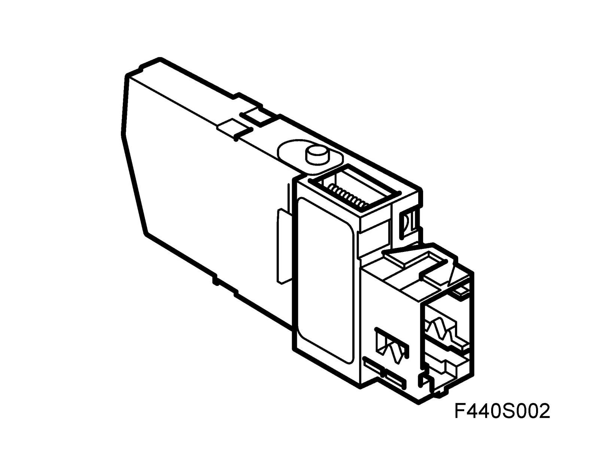
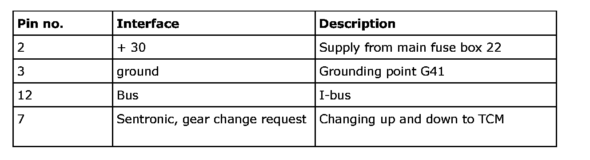
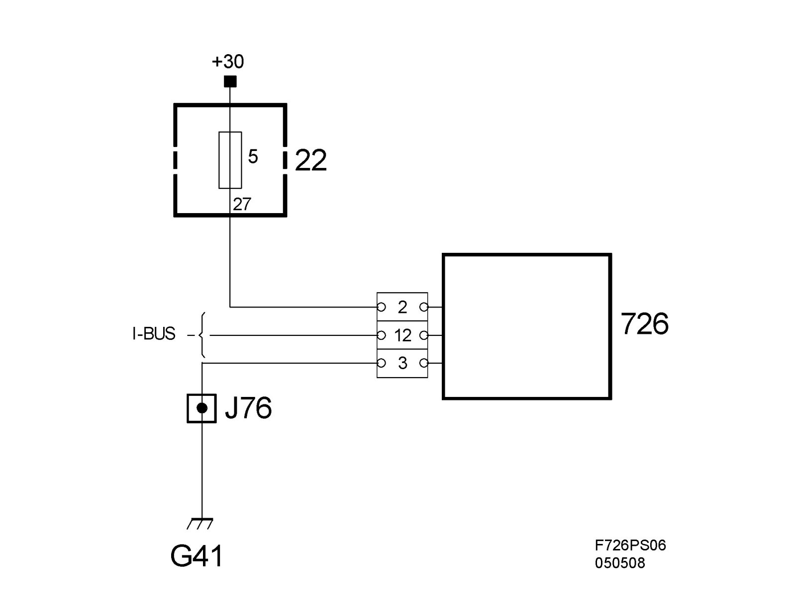
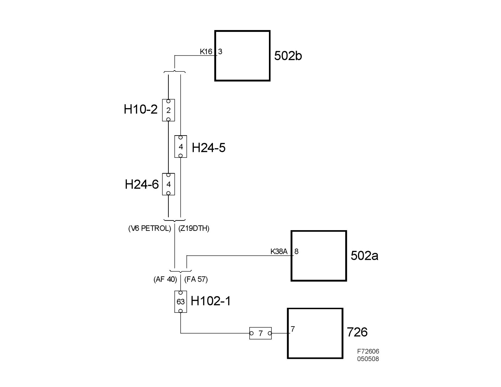

Shift Lever Module
Shift lever module (726)Location
Shift lever module (726)

Main use
To inform TCM that gear position "M" has been selected.
To inform TCM through a direct line that manual gear changing up or down is requested.
To inform Ignition switch module that gear position "P" has been selected.
To indicate with LEDs in the gear selector coulisse the gear position that is currently selected, P-R-N-D or M.
Type
Microprocessor with integrated Hall sensor.
Activation
The SLM control module is powered with +30 on pin 2 from the electrical center 22, fuse 5. Grounding is done on pin 3, grounding point G41. Bus communication (I-bus) takes place on pin 12.
Communication regarding gear changes up or down in position "M" takes place from pin 7 on the SLM to pin 3 on TCM for FA 57 respectively pin 8 on TCM for AF 40.
Communication is resistive multiplexed. SLM has an internal 8.2 kOhm resistor to B+ connected to the pin. This is connected in parallel with another resistor of 1.5 kOhm when changing down. When changing up, a resistor of 4.4 kOhm is connected. There is a 390 ohm resistor to ground in TCM. In this way, 3 normal voltage levels are generated corresponding to an untouched gear lever, M- and M+. Other voltage levels give a diagnostic trouble code.

- Power supply, ground and bus connection

- Communication with TCM
